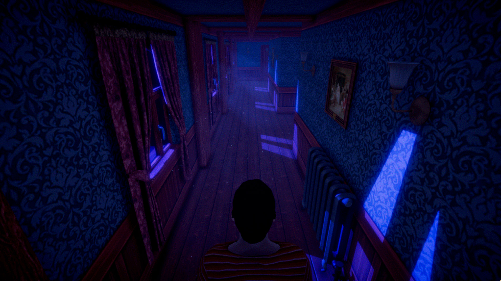
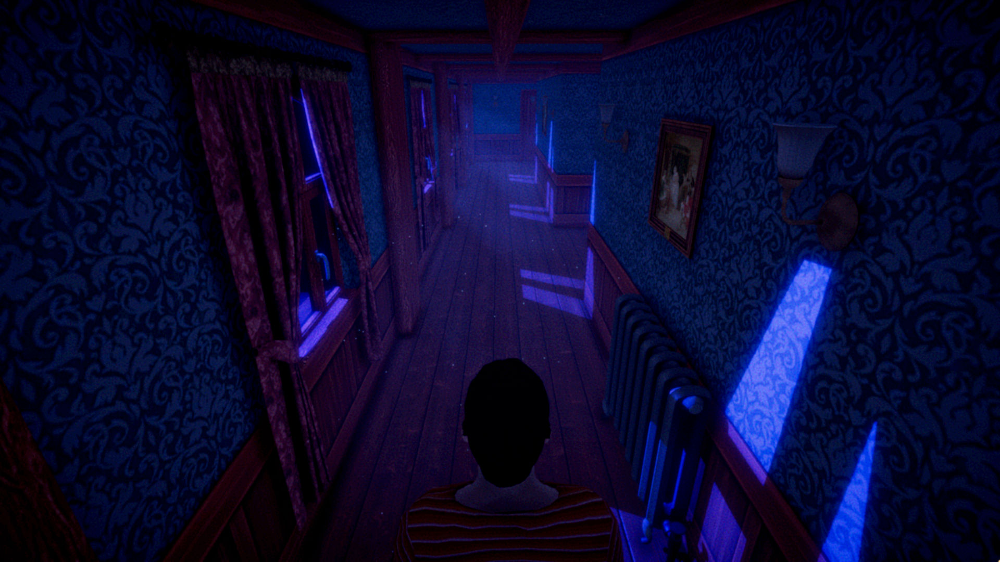
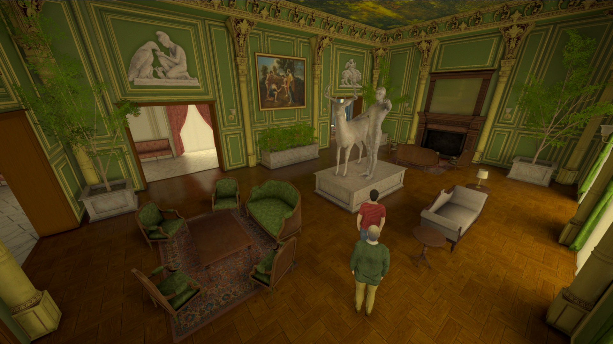
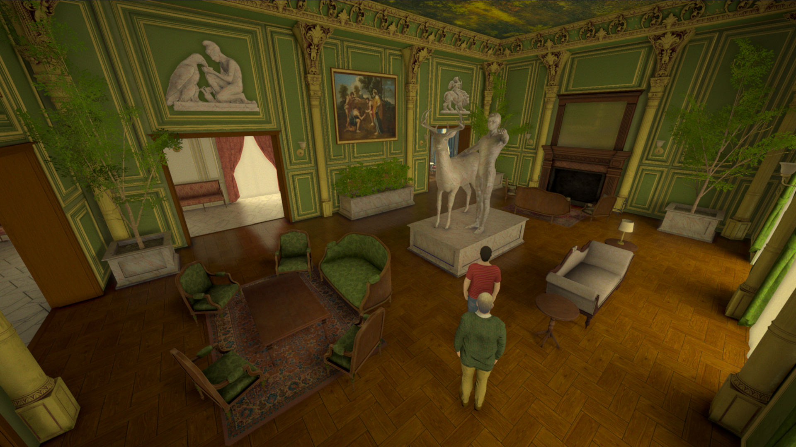
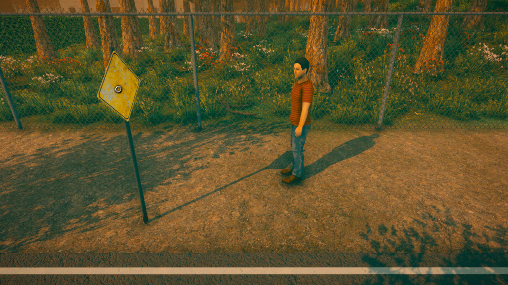
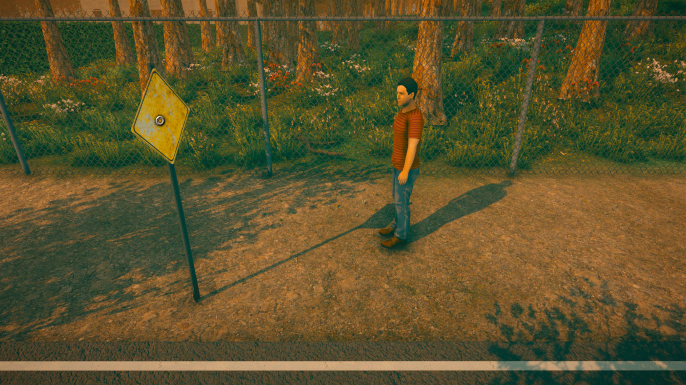

Factsheet
Developer:
Mouse Council
Based in Michigan, USA
Contact:
mousecouncildev@gmail.com
Release Date:
Q4 2025
Genre:
Adventure, horror
Platforms:
Steam
Itch.io (page forthcoming)

Overview
Beaux-Arts is a surreal horror-adventure game about cruelty, suffering, and beauty. You stop at a countryside estate looking for directions, but quickly end up caught in a nightmarish system of justice whose rules are both arbitrary and violently enforced. As prisoner of the household, your task is to convince the residents to help you leave this place alive. Not everyone here wants to hurt you, but they each have their own reasons to be reticent in offering aid...
Features
- Interact with a cast of seven characters, each of whom are guided their own motivations and concerns independent of your plight.
- Flipping the structure of traditional adventure games, residents of the manor can move about freely, while your movements are highly restricted. You are not in control of this situation, making the limited agency you do have all the more important.
- The manor houses over a hundred works of art by Pieter Bruegel, Gustave Moreau, El Greco, and others. Far from being simple set dressing, these artworks play a key role in the game's plot and themes.
- With a runtime of around 90-120 minutes, the game tells a complete story that can be finished in a single sitting.
Media
You can view and download all media (screenshots, trailer, key art, etc.) here.
 

 

 
